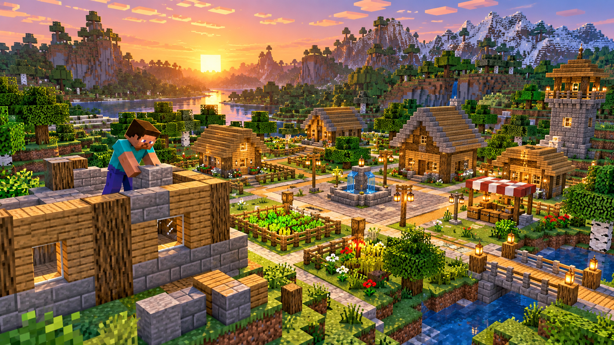

Front-end + Overworld · Edición 1.5.0
Construir para la web también es jugar en bloques
Componentes, grillas y patrones de diseño explicados con aventuras por el Overworld.

Por Nicolás Pieroni ·
Componentes que trabajan en equipo
Una aldea no se construye colocando bloques al azar. Primero se decide qué piezas hacen falta, cómo se conectan y qué partes conviene poder reutilizar. En una página web pasa algo parecido: los componentes ordenan la interfaz en piezas que se pueden combinar.
Una aventura por el desarrollo web
En estas historias, Steve intercambia datos con un piglin, una casa modular muestra cómo funciona un contenedor y una aldea entera se organiza con CSS Grid. Cada aventura sirve para mirar un concepto de front-end desde otro ángulo.